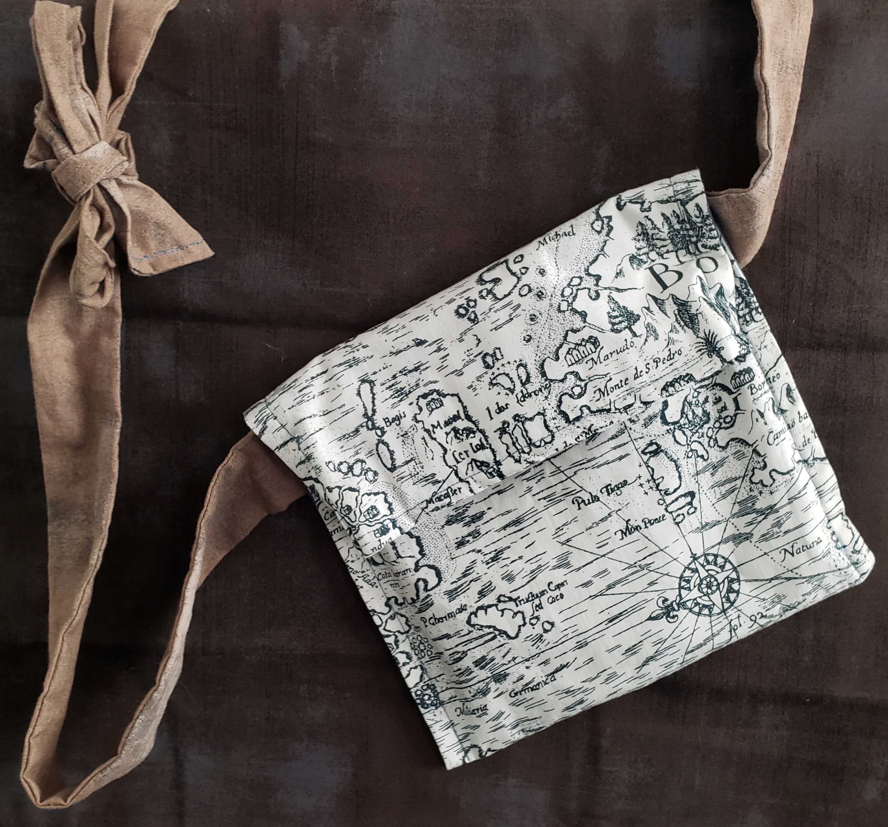
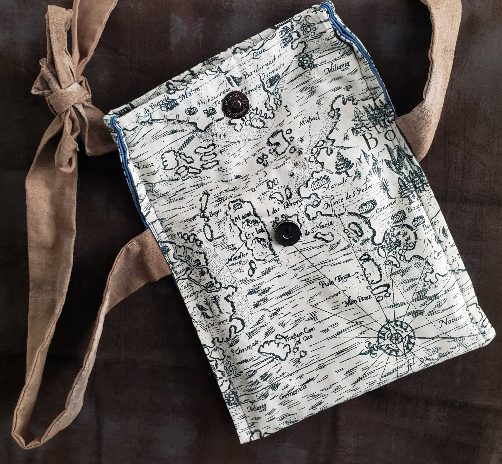
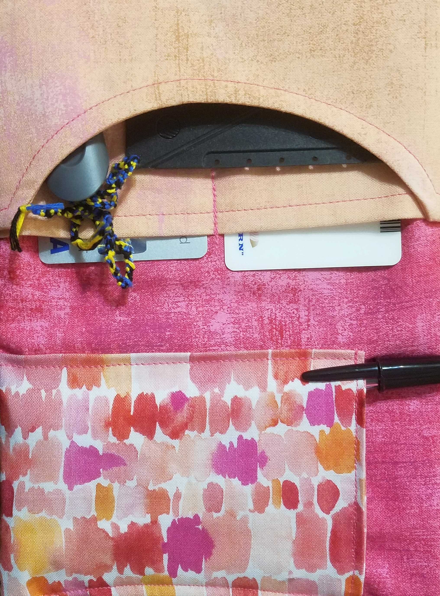
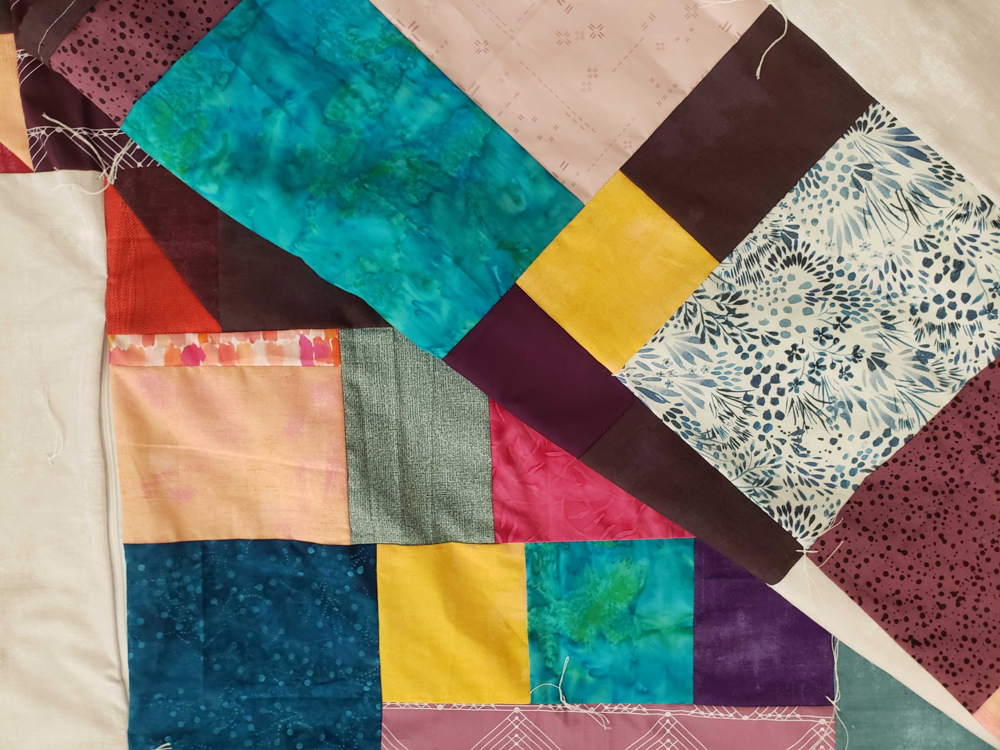

These are three book bags I made etc fabric
This is a bag I made with a strap and a fold over. There's also a pocket inside.

This is a quilt in the design process.

Here is the complete quilt.
And here is the bag with the top open. I added a magnetic clasp.
Here is a bag that I didn't finish due to incorrectly sewing the straps together. First experiment with using metal clasps and connectors.

This is a bookmark I sewed for my favorite book series.
The inside of one of the wallets to the right.

This is one of my favorite book bags. It's simple and the straps are hidden within the stitch.

These are two wallets I made as an experiment. I learned how to use elastic, applique, and top stitching.
And here is another picture of the finished quilt.
This is my portfolio, for my business or for anyone who is interested in commissioning me to do a project. It will be updated regularly. It includes quilts, book bags, and any other projects I have tried.
Here are some skills I want to develop:
Hand and machine embroidery
Sewing with woven/knit fabric
Using various stitches
Using all presser feet on my sewing machine
Designing and sewing clothing
Here is a list of projects I want to do with a description of each one.
Sweaters: I'm working now on sewing a sweater using one I have as a pattern.
Outerwear: I'd like to do something similar
using a heavier fabric instead of a knit.
Jelly roll quilt: I want to try making a quilt with smaller strips of fabric
and following a pattern, which I don't have much experience with.
Themed quilt: I have ideas for quilts I want to design
and execute myself.